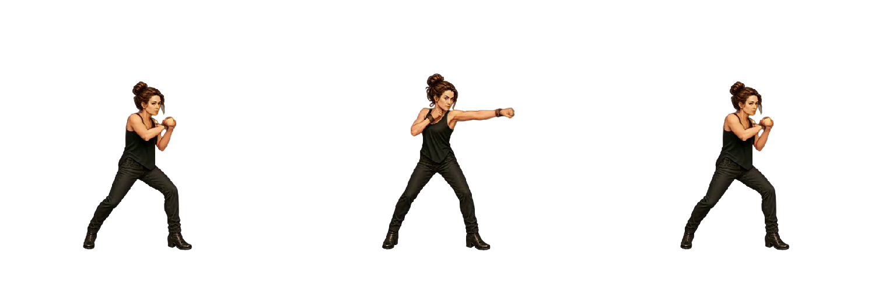
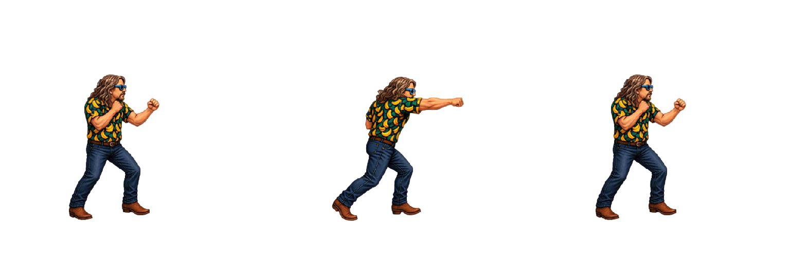
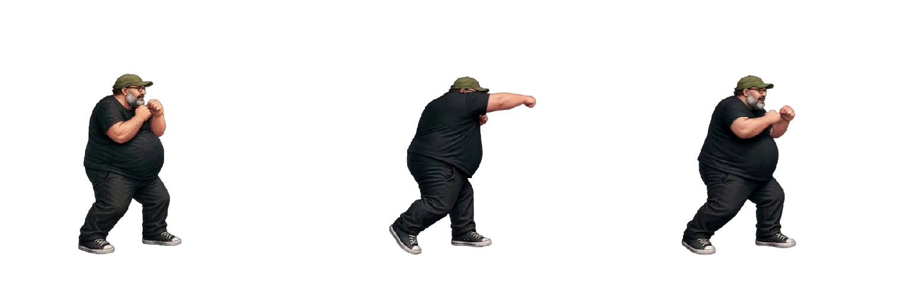
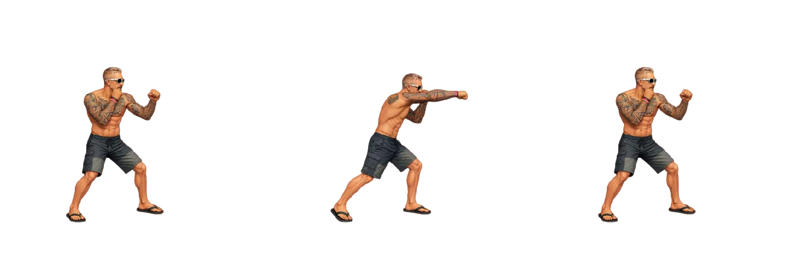
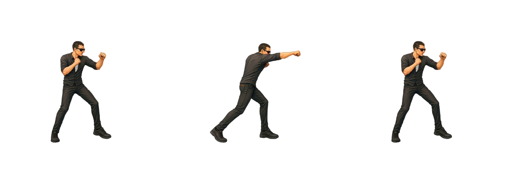
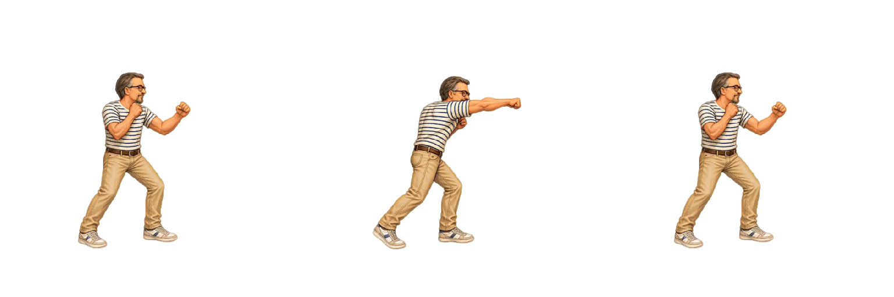
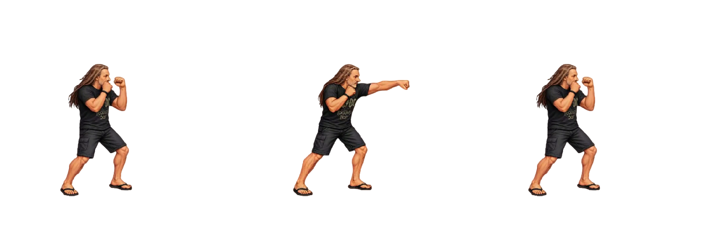

Timing Pugno leggero
Tutti i sette personaggi eseguono la sequenza in 500 ms (0,5 s) a velocità 1×. La massima estensione inizia a 300 ms (0,30 s). I frame precedenti dividono i primi 300 ms; dal frame di estensione alla fine dividono i restanti 200 ms, incluso l’ultimo. Gli FPS indicati sono la media del ciclo.
Le pose mostrano ingresso, massima estensione sincronizzata e fine della sequenza. Il frame selezionato usa un indice da zero nella configurazione; qui sono indicati anche i numeri da uno. Senza Loop resta visibile il frame finale; con Loop il ciclo dura 500 ms. Arianna raggiunge l’ultimo frame di andata (indice 8) a 300 ms, poi torna all’idle ripercorrendo i frame 7–0. Per gli altri cinque roster fighter il ritorno è già parte della sequenza principale Godot.
Frame, pixel, proporzioni in centimetri e correzioni Godot sono conservati. “Riproduci tutte” riallinea anche i cicli successivi e i caricamenti progressivi; a 0,5× dura 1 s, a 2× dura 0,25 s. I timing Godot originali restano nel manifest.
Per Bue, Mileto, Oscare, Peirò e Torpe viene letto esattamente il campo light_punch_sheet delle scene Godot, distinto da jump_light_punch_sheet. Le pose sono quelle del pugno leggero a terra.
Scarica CSV · Configurazione timing
| Personaggio | Ingresso / estensione / fine | Frame | Durata | Massima estensione | FPS medi demo | FPS Godot | Note |
|---|---|---|---|---|---|---|---|
| Arianna |  Frame 1 / 9 / 17 | 17 | 500 ms | 300 msFrame 9 (indice 8) | 34 | 48 | Arianna: 17 frame (0–8, 7–0); ultimo frame di andata a 300 ms, ritorno inverso fino all’idle. |
| Bue |  Frame 1 / 5 / 13 | 13 | 500 ms | 300 msFrame 5 (indice 4) | 26 | 24 | 13 frame: andata 0–6, ritorno 5–0 già incluso nella sequenza Godot. |
| Mangler |  Frame 1 / 11 / 18 | 18 | 500 ms | 300 msFrame 11 (indice 10) | 36 | 48 | Mangler: 18 frame, scala reworked 0.85. |
| Mileto |  Frame 1 / 7 / 13 | 13 | 500 ms | 300 msFrame 7 (indice 6) | 26 | 24 | 13 frame: andata 0–6, ritorno 5–0 già incluso nella sequenza Godot. |
| Oscare |  Frame 1 / 6 / 13 | 13 | 500 ms | 300 msFrame 6 (indice 5) | 26 | 24 | 13 frame: andata 0–6, ritorno 5–0 già incluso nella sequenza Godot. |
| Peirò |  Frame 1 / 5 / 13 | 13 | 500 ms | 300 msFrame 5 (indice 4) | 26 | 24 | 13 frame: andata 0–6, ritorno 5–0 già incluso nella sequenza Godot. |
| Torpe |  Frame 1 / 7 / 13 | 13 | 500 ms | 300 msFrame 7 (indice 6) | 26 | 24 | 13 frame: andata 0–6, ritorno 5–0 già incluso nella sequenza Godot. |